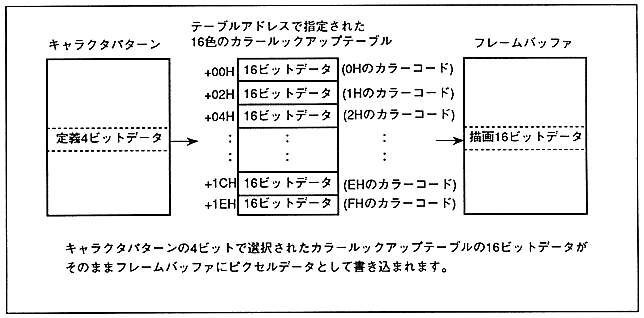

- Define the address of the color lookup table.
- When the color mode is the lookup table mode, 4bit data of the texture part character pattern is converted into 16bit pixel data by referring to the color lookup table and written to the frame buffer.
- The color lookup table defines a 16-bit 16 color code. Since 16-bit data on the table is written to the frame buffer as it is, there is no distinction between color bank code and RGB code as the character pattern of the texture part. When read to VDP2, when the 16-bit MSB is 0, it is treated as a color bank code, and when it is 1, it is treated as an RGB code.
- Color lookup table address defines the color lookup table address / 8H. Since the color lookup table is defined with a 20-Hbyte boundary, the LSB2bit of the lookup table address is fixed to 00.
Figure 6.18 Color Lookup Table
